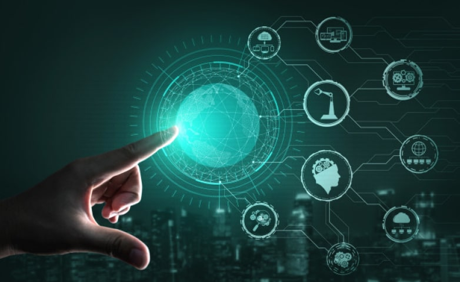

¿Qué es la tecnología?
¿Qué es la tecnología? Definición
Con el correr de los años y la lógica evolución humana, que desencadenó el avance significativo de la ciencia,
la tecnología se ha ligado intrínsecamente con la ciencia, dando lugar a desarrollos y descubrimientos que permitieron que ambas crecieran a la par,
alimentándose recíprocamente.
Básicamente, podría decirse que la tecnología es un conjunto de técnicas y procedimientos que se diseñan para solucionar un determinado problema.
La tecnología está en las manos del hombre ni bien le dio filo a un hueso para salir a cazar,
es decir que la tecnología es tan antigua como el hombre mismo.
En este sentido no debemos caer en el error de pensar que tecnología significan solamente hardware y software.
que-es-la-tecnologia- (2)
Hoy, la tecnología es ampliamente relacionada a los artefactos que han sido elaborados mediante los parámetros de la ciencia y el avance del conocimiento del hombre,
llegando a desarrollar innovaciones tecnológicas que han revolucionado y continuarán revolucionando el mundo.
Devenida de la fusión de la técnica y la ciencia, en la actualidad la tecnología es definida como el conjunto de conocimientos técnicos ordenados científicamente,
a través de los cuales es posible diseñar y crear bienes y servicios en pos de satisfacer las necesidades esenciales del hombre.
que-es-la-tecnologia- (3)
Por tal motivo, es lógico que toda la actividad y el desarrollo de la tecnología influyan directamente en la sociedad, a través de sus diversos ambientes,
tanto culturales, como económicos, educativos y demás. Asimismo, debido a que existen una gran variedad de tipos de tecnología,
puede aplicarse cada una de ellas para fines específicos. Tal es el caso de la llamada Tecnología Informática, también conocida por las siglas IT.

La revolución digital
Podría considerarse que la llamada Revolución Digital es consecuencia directa de la aparición de las computadoras en la vida de las personas,
ya que con ellas cambiaron para siempre muchas de las costumbres que teníamos desde hace siglos.
De la mano de las diversas tecnologías derivadas de estas como las redes sociales, la nube y demás,
la humanidad cambió para siempre muchas de las costumbres que teníamos desde hace siglos.
La computadora, para bien o para mal, vinieron a cambiar esto.
Que las computadoras fueran cada vez más pequeñas y poderosas, lo que también se traduce un precio muchísimo más bajo, permitió su masificación,
y con ella la posibilidad de poder ser usada en muchos lugares en donde antes era imposible tener acceso a un dispositivo como este, y además por todo tipo de usuarios,
independientemente de su nivel de conocimientos y estatus social.
Desde sus inicios, cuando eran enormes aparatos con miles de tubos de vacío, la computadora ofreció a universidades y centros de investigación, tanto civiles como militares,
un modo relativamente sencillo de investigar temas muy complicados de manera más cómoda, rápida y eficiente, y ahora gracias a su masificación,
primero gracias al transistor y luego al circuito integrado, y también gracias a Internet, otro gran invento de la Edad Moderna, pudimos comunicarnos sin fronteras gracias
al correo electrónico, usar los servicios que nos ofrece la nube y a los servicios de mensajería,
y también permitió que todos pudiéramos acceder a información de cualquier tema en nuestro propio hogar,
lo que no sin duda nos permite avanzar en infinidad de temas sin tener que esperar nada de nadie.
